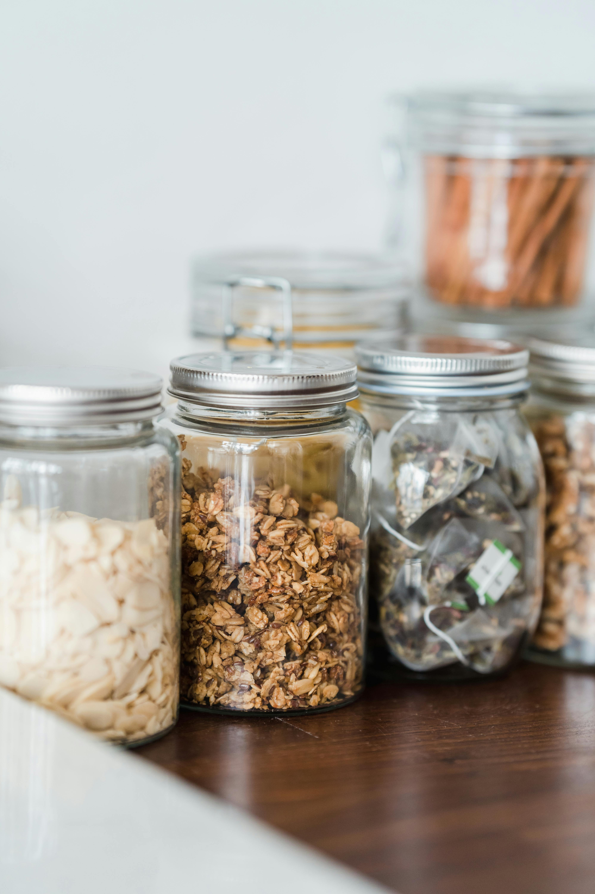
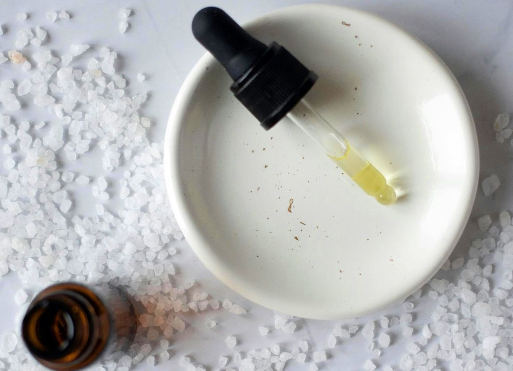

Locally Bottled in Cape Town
Small-batch quality control ensures every product meets our high standards for effectiveness and sustainability.
Better choices. Better future.
My Green Life creates plant-based cleaning, laundry, and personal care products that are safe for your home and gentle on the planet. Every formula is biodegradable, every ingredient locally sourced, and every bottle part of our circular economy.
Connecting communities through sustainable solutions
We connect distributors, community groups, and organisations with sustainable products.
Empties come back, waste stays out of landfills, and reuse beats single‑use.
Transparent processes ensure everyone benefits—customers, distributors, and the planet.
Search by product to see its ingredients, or search by ingredient to see which products include it.

Small-batch quality control ensures every product meets our high standards for effectiveness and sustainability.
Refill‑friendly products that are certified safe for your family and gentle on the environment.

A clear system that rewards participation and ensures containers are reused, not wasted.